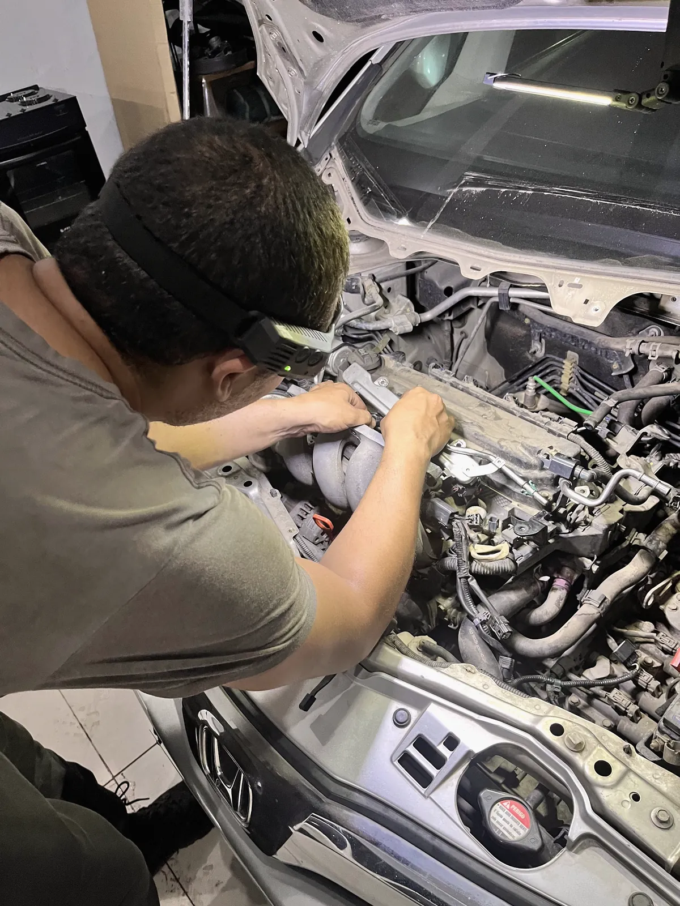
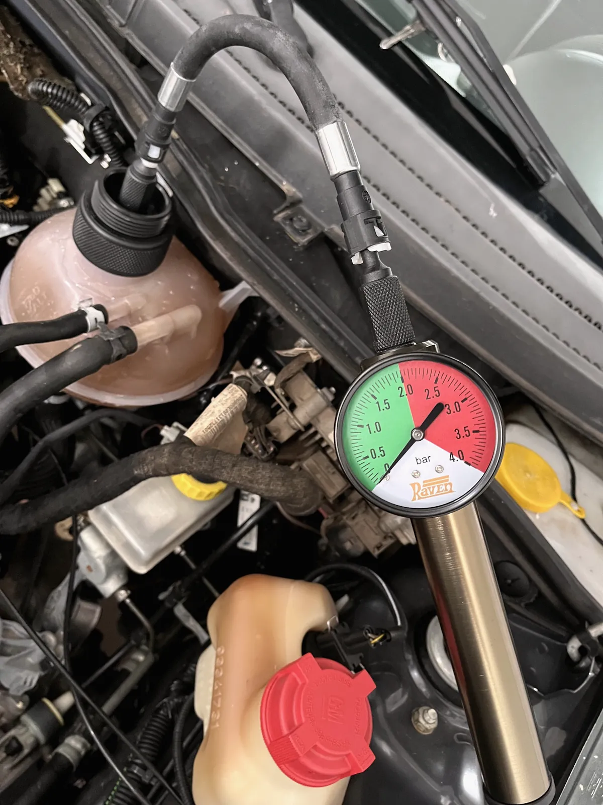
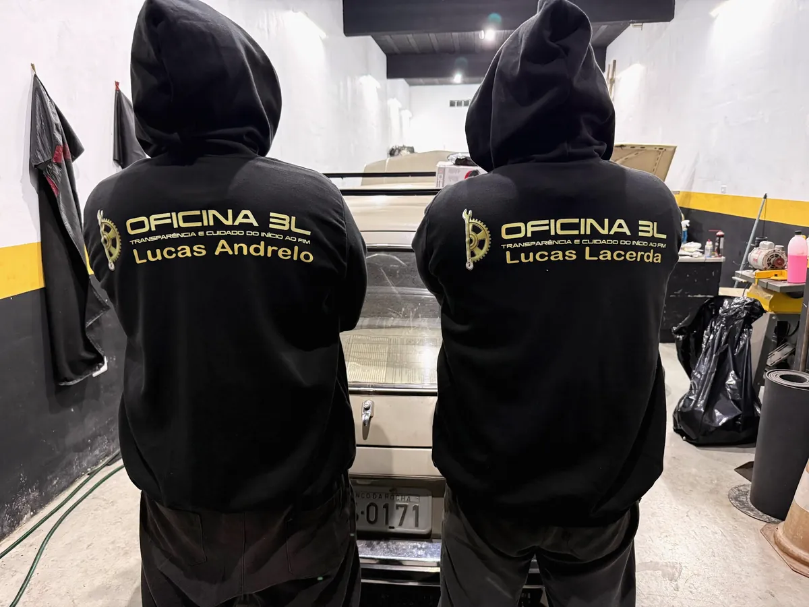

Oficina mecânica em Franco da Rocha
Transparência e cuidado do início ao fim.
Diagnóstico preciso, manutenção preventiva e corretiva, e um atendimento que mostra o que está sendo feito no seu carro.
- 5,0 36 avaliações no Google
- Seg. a sex., 9h às 18h
Nossos serviços
Tudo o que seu carro precisa.
Do diagnóstico à manutenção, com qualidade e transparência.
Agendar um serviço
Diagnóstico completo
Identifica o problema com precisão, antes de qualquer troca.
Manutenção preventiva e corretiva
Ferramentas específicas e peças originais.
Freios
Até sapata nova, mas trincada, aparece no diagnóstico.
Suspensão
Do carro pequeno à caminhonete.
Troca de óleo
O básico, feito com capricho.
Revisão para viagens
Para pegar a estrada tranquilo com a família.


Nossa equipe
Quem cuida do seu carro.
Em julho de 2025 a oficina mudou de endereço, e o Lucas Lacerda chegou junto com o Lucas Andrelo para essa nova fase. Muitos clientes ainda lembram do nome antigo, Andrelo Garagem.
Fale com a equipeTive uma ótima experiência. Desde o atendimento até a entrega do veículo, tudo foi feito com muito profissionalismo e transparência.
Excelente oficina! Os rapazes são muito atenciosos, prestativos e realmente entendem do que fazem.
Mão de obra especializada, compromisso, honestidade e preço justo. O melhor da região!
Fornecem atenção desde o diagnóstico até a entrega! Preço justo e trabalho excepcional! Ganharam mais um cliente.
Agende sua visita
Conte o que está acontecendo.
A mensagem vai pronta para o WhatsApp da oficina.
Ordem de serviço--/--
- Veículo
- —
- Relato
- —
- Primeira etapa
- Diagnóstico
Oficina 3L · do início ao fim